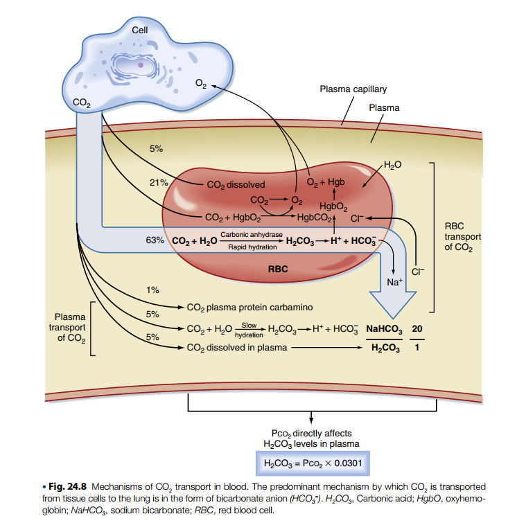

Chương 7: Cơ học Hô hấp & Trao đổi khí nâng cao
Phần 3: Huyết động học Tim mạch và Cơ học Hô hấp Nâng cao
🖼️ Hình 7.1: Đồ thị đường cong phân ly Oxy-Hemoglobin (Đường cong Barcroft)
📥
Chèn ảnh hoặc mã iframe vào đây
(Thay thế div này bằng thẻ <img src="...">)
Mô tả: Đồ thị biểu diễn mối quan hệ $PO_2$ và độ bão hòa $SaO_2$, kèm các mũi tên trực quan chỉ rõ các yếu tố ($H^+$, $CO_2$, nhiệt độ, $2,3-DPG$) làm dịch chuyển đường cong sang phải (tăng nhả $O_2$ ở mô) hoặc sang trái.
🖼️ Hình 7.2: Đồ thị Campbell và Sơ đồ cơ học phổi tĩnh/động trong thở máy
📥
Chèn ảnh hoặc mã iframe vào đây
(Thay thế div này bằng thẻ <img src="...">)
Mô tả: Bản vẽ phối hợp áp lực đường thở (Airway pressure waveforms) chỉ rõ các thông số: Compliance của nhu mô, Resistance của đường thở, và sơ đồ bẫy khí tạo ra Auto-PEEP trên bệnh nhân COPD.
🖼️ Hình 7.3: Sơ đồ các mô hình bất cân xứng thông khí/tưới máu ($V/\dot{Q}$ mismatch)
📥
Chèn ảnh hoặc mã iframe vào đây
(Thay thế div này bằng thẻ <img src="...">)
Mô tả: Minh họa 3 trạng thái phế nang - mao mạch: Phổi bình thường ($V/\dot{Q} = 1$), Khối Shunt ($V/\dot{Q} = 0$, phế nang xẹp/ngập dịch) và Khoảng chết ($V/\dot{Q} = \infty$, mạch máu bị tắc/thuyên tắc phổi).
🖼️ Hình 7.4: Sơ đồ cơ chế vận chuyển khí CO₂ trong máu

Mô tả: Minh họa các con đường vận chuyển $CO_2$ trong máu bao gồm: (1) Hòa tan vật lý trong huyết tương và hồng cầu, (2) Kết hợp với Hemoglobin tạo Carbaminohemoglobin ($HbCO_2$), (3) Dưới dạng muối kiềm Bicarbonate ($HCO_3^-$) qua phản ứng thủy hóa nhờ men Carbonic Anhydrase (CA) và hiện tượng dịch chuyển Chloride (Chloride Shift). Đồng thời thể hiện mối liên hệ toán học của hệ đệm bicarbonate: $\frac{NaHCO_3}{H_2CO_3} = \frac{20}{1}$ và công thức tính $H_2CO_3 = Pco_2 \times 0.0301$.